| Integrante | Anderson Leonel Ugaz Portales |
| Repositorio (GitHub) | https://github.com/andersonugazpor-crypto/serf-reportes-financieros |
| Prototipo interactivo | https://claude.ai/artifact/SEvDNcQDCHTzC4shDhpgTM |
| Enlace de Figma | https://www.figma.com/design/qZo7vqocsxK4J7az6jBP6d/SERF?node-id=1002-25&t=6uQu6qEmF4cVJNUX-1 Modo presentación: https://www.figma.com/proto/qZo7vqocsxK4J7az6jBP6d/SERF |
| Tecnologías | TypeScript · NestJS 11 · Angular 21 · Bootstrap 5 · Jest · Vitest |
| Fecha | Noviembre de 2026 |
FinanCorp S.A. importa productos tecnológicos fabricados en China (laptops, smartphones, accesorios y equipos de redes) y los vende mediante filiales en Europa y Latinoamérica. Cada filial administra su inventario y sus ventas con su propio sistema y formato, por lo que la consolidación mensual se hacía con validaciones manuales y sin un flujo automatizado de reportes.
SERF es una aplicación web que:
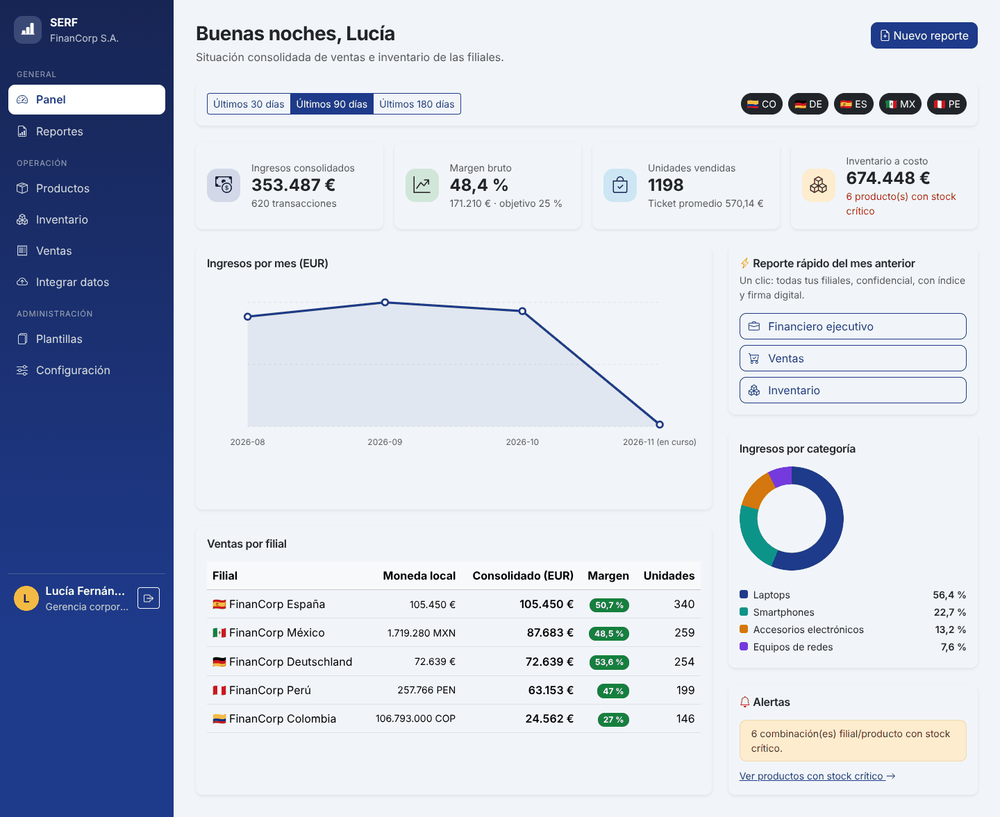
El backend es una API REST en NestJS donde se concentran el dominio y los patrones de diseño. El frontend en Angular es responsive y consume esa API. Ambos están escritos en TypeScript con tipado estricto.
| Usuario | Necesidades | Solución en SERF |
|---|---|---|
| Gerencia corporativa (ADMIN) | Ver la situación consolidada, obtener reportes confiables, ajustar políticas. | Panel en EUR, reporte de un clic, firma digital, configuración central, alta de filiales. |
| Analista financiero | Analizar ventas, márgenes e inventario; mantener el catálogo. | Asistente de reportes por tipo, periodo y filial; catálogo de productos; plantillas por país. |
| Operador de filial | Cargar los datos de su sistema; registrar ventas e ingresos de mercadería. | Integración por archivo con vista previa; ventas con control de stock; acceso limitado a su filial. |
| Proceso | Problema recurrente | Patrón |
|---|---|---|
| Integración de datos de filiales | Cada sistema exporta en un formato incompatible. | Adapter |
| Parámetros corporativos y acceso a datos | Debe existir un único punto de configuración y un único pool de conexiones. | Singleton |
| Plantillas de reporte por país | Repetir la misma estructura con variaciones locales. | Prototype |
| Armado de reportes | Objetos complejos con muchas partes opcionales. | Builder (+ Director) |
| Contenido del reporte | Secciones que contienen subsecciones y elementos. | Composite |
| Seguridad y extras del reporte | Agregar características sin tocar la estructura. | Decorator |
| Uso del generador | Muchos subsistemas detrás de una acción simple. | Facade |
| Formatos de salida | Crear exportadores sin acoplarse a clases concretas. | Fábrica |
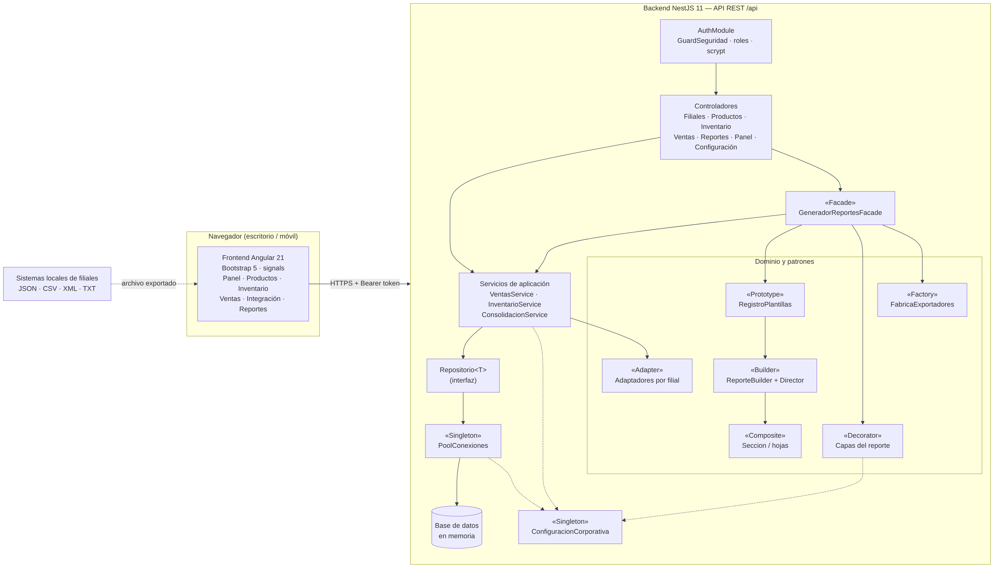
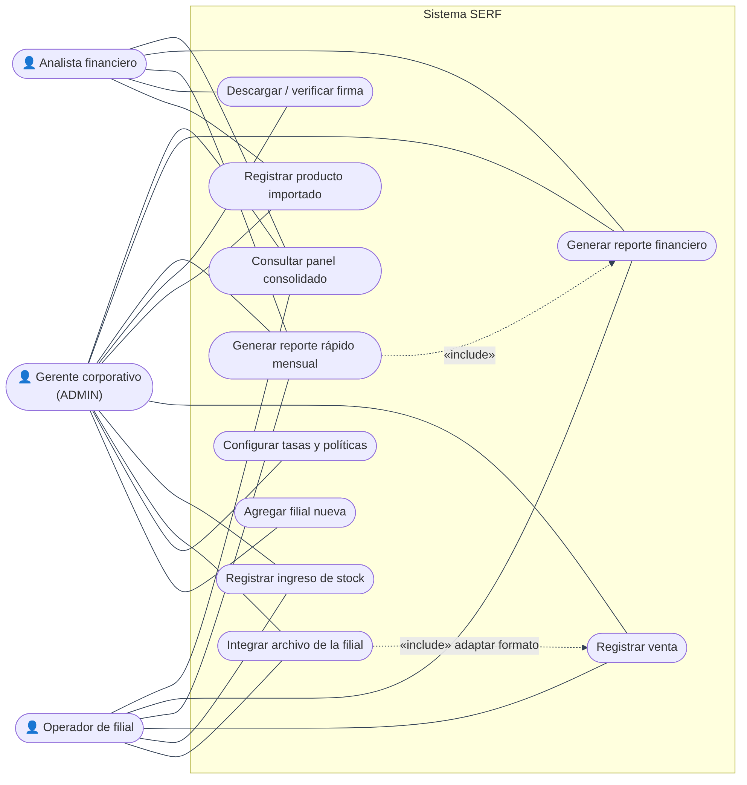
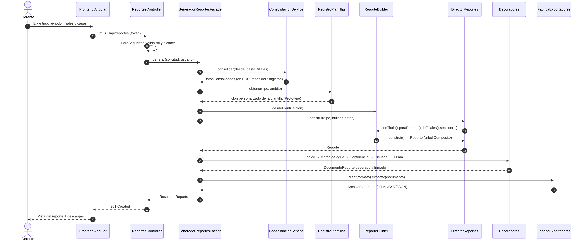
Se diseñaron 10 pantallas en versión escritorio y móvil. El prototipo navegable está en https://claude.ai/artifact/SEvDNcQDCHTzC4shDhpgTM (fuente en docs/prototipo/). Las imágenes de docs/wireframes/ se importan en Figma como frames y se enlazan con interacciones On click → Navigate to El prototipo de Figma enlaza 6 pantallas del flujo principal (inicio de sesión → panel → asistente de 3 pasos → reporte generado): https://www.figma.com/design/qZo7vqocsxK4J7az6jBP6d/SERF?node-id=1002-25&t=6uQu6qEmF4cVJNUX-1.
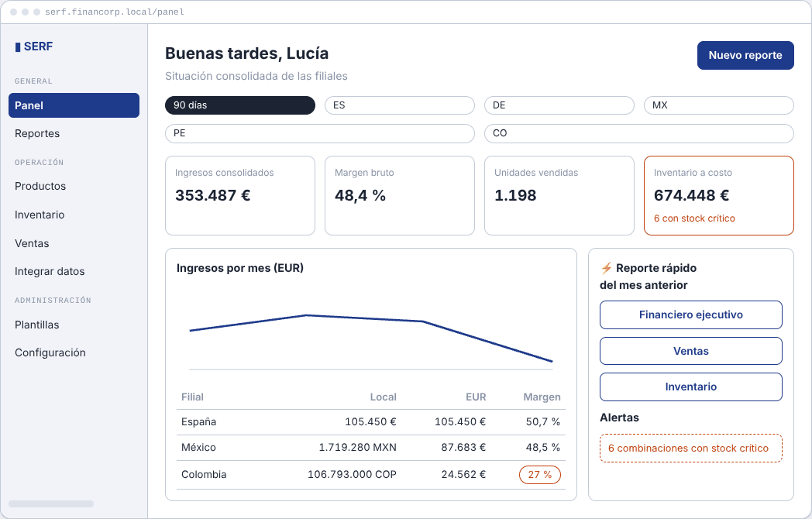
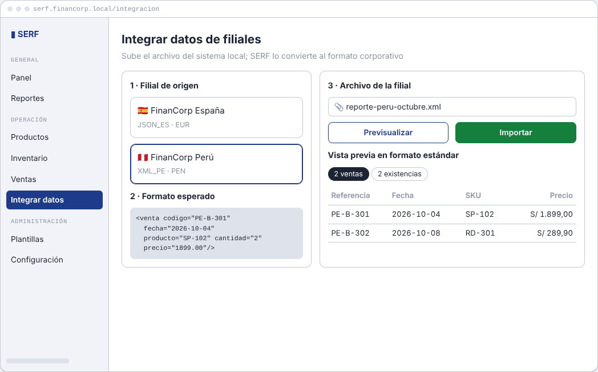
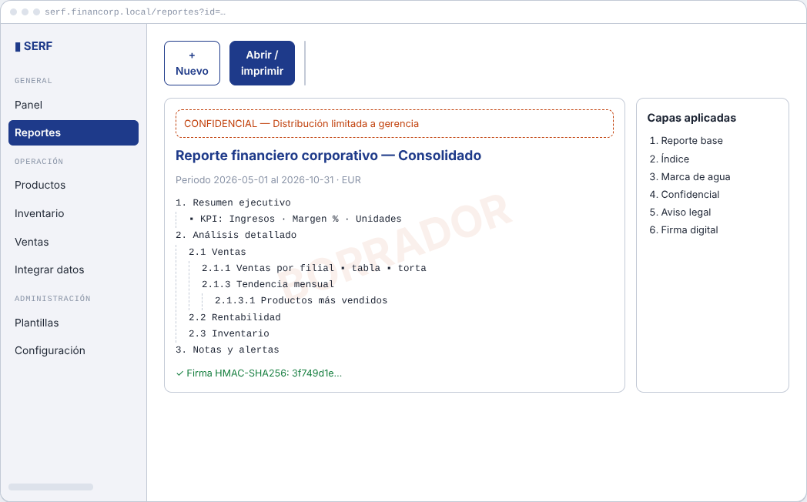
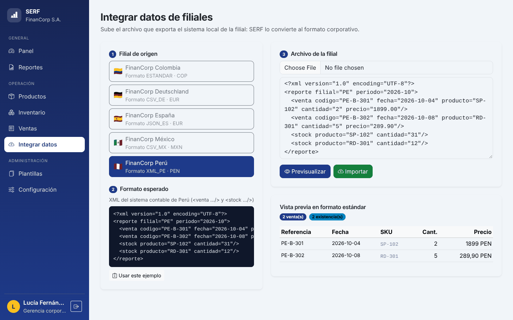
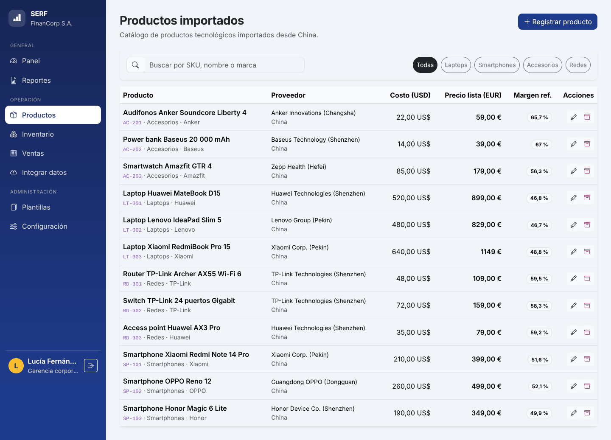
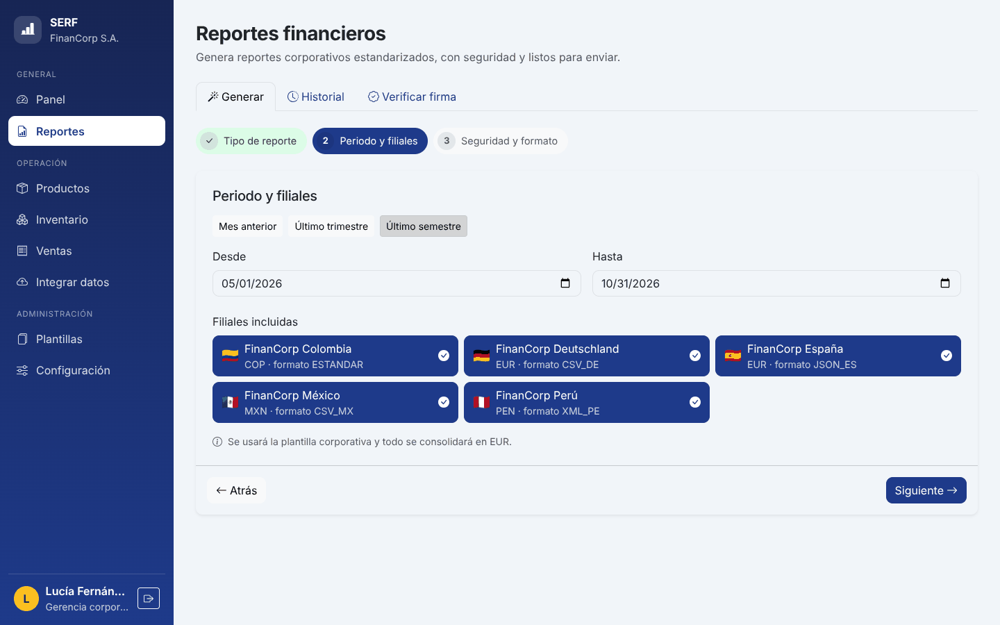
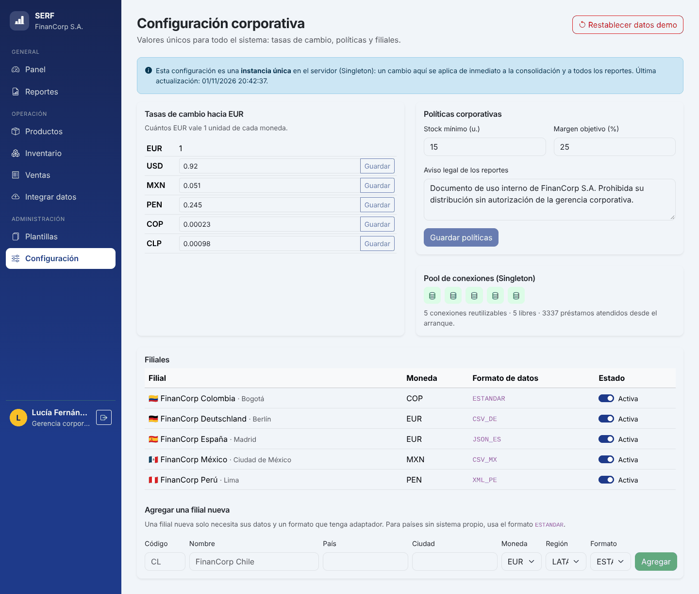
| Requisito | Implementación |
|---|---|
| 1. Integrar datos de las filiales | Archivo nativo de cada filial → adaptador → vista previa → importación sin duplicados y actualización del inventario. |
| 2. Registrar productos y seguir su venta | Catálogo (SKU, proveedor en China, costo USD, precio EUR); inventario con stock crítico; ventas en moneda local que descuentan stock. |
| 3. Reportes automáticos, seguros y estandarizados | 4 tipos; asistente o reporte rápido; HTML, CSV o JSON; índice, marca de agua, clasificación, aviso legal y firma HMAC-SHA256. |
| 4. Escalable y adaptable | Alta de filiales desde la interfaz; adaptadores y exportadores registrables; políticas y tasas centralizadas. |
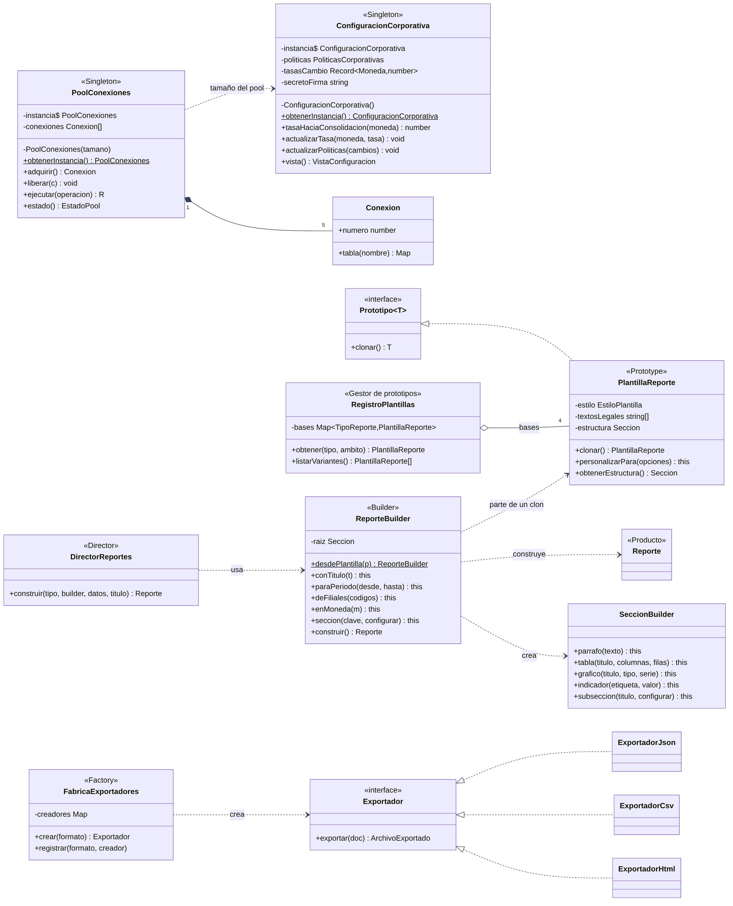
ConfiguracionCorporativa y PoolConexiones tienen constructor privado y un método estático obtenerInstancia() que crea la instancia una sola vez (inicialización perezosa). El estado solo cambia mediante métodos que validan los datos, y vista() devuelve una copia congelada que no expone el secreto de firma. NestJS registra los Singletons con useFactory para reutilizar esa misma instancia.
private static instancia: ConfiguracionCorporativa | null = null;
private constructor() { ... }
static obtenerInstancia(): ConfiguracionCorporativa {
if (!ConfiguracionCorporativa.instancia) ConfiguracionCorporativa.instancia = new ConfiguracionCorporativa();
return ConfiguracionCorporativa.instancia;
}El pool mantiene 5 conexiones reutilizables; ejecutar() presta una conexión y la devuelve en un bloque finally, aunque la operación falle.
Hay 4 plantillas base (ventas, inventario, rentabilidad, ejecutivo). RegistroPlantillas.obtener(tipo, país) clona la base y personaliza la copia: normativa (PGC, NIF, PCGE–SUNAT, HGB, NIIF), formato regional y texto legal. La clonación es profunda: copia el estilo, los textos y el árbol completo de secciones, de modo que el clon es independiente del original. Así se obtienen 24 variantes sin instanciar clases concretas por país.
clonar(): PlantillaReporte {
return new PlantillaReporte({ ..., estilo: { ...this.estilo },
textosLegales: [...this.textosLegales], estructura: this.estructura.clonar() }, false);
}ReporteBuilder separa la construcción de la representación: el Reporte solo se crea en construir(), después de validar los pasos obligatorios. SeccionBuilder permite anidar subsecciones sin límite. El Director (DirectorReportes) aplica la receta estándar de cada tipo, por lo que todos los reportes de un tipo tienen el mismo formato.
ReporteBuilder.desdePlantilla(plantillaClonada)
.conTitulo('Reporte de ventas').paraPeriodo('2026-10-01', '2026-10-31').deFiliales(['ES', 'MX'])
.seccion('ventas-filial', s => s.tabla('Ventas por filial', columnas, filas, totales)
.subseccion('Detalle', d => d.parrafo('...').indicador('Margen %', 48.1, 'porcentaje')))
.construir();FabricaExportadores.crear(formato) devuelve la interfaz Exportador (HTML, CSV o JSON) sin que la fachada conozca las clases concretas. Para agregar un formato nuevo basta con registrarlo, sin modificar el código existente.
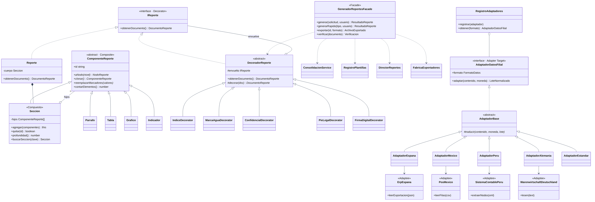
ComponenteReporte es la interfaz común de Seccion (compuesto) y de las hojas Parrafo, Tabla, Grafico e Indicador. Todos se cuentan, clonan, serializan y reciben marcadores de la misma forma. El anidamiento es ilimitado (una prueba crea 25 niveles) y se impiden ciclos. En el frontend, un componente Angular recursivo dibuja cualquier profundidad.
Cada decorador envuelve un IReporte y agrega una sola característica: índice numerado, marca de agua, clasificación de confidencialidad, aviso legal o firma digital HMAC-SHA256. Las capas se apilan en cualquier combinación y quedan registradas en orden. La firma va siempre al final y VerificadorFirma detecta cualquier alteración posterior.
GeneradorReportesFacade.generar() y generarRapido(tipo) ocultan consolidación, plantillas, builder, decoradores y exportación. La interfaz web genera un reporte listo para enviar con un clic.
| Filial | Sistema local (adaptee) | Formato |
|---|---|---|
| España | ErpEspana | JSON con campos propios |
| México | PosMexico | CSV, fechas DD/MM/AAAA |
| Perú | SistemaContablePeru | XML con atributos |
| Alemania | WarenwirtschaftDeutschland | Secciones, separador ";" y coma decimal |
| Colombia y nuevas | — | JSON estándar corporativo |
| Principio | Aplicación en SERF |
|---|---|
| S · Responsabilidad única | ConsolidacionService calcula; DirectorReportes arma; cada decorador agrega una característica; cada exportador produce un formato; FiltroErrores traduce a HTTP. |
| O · Abierto/cerrado | Una filial nueva implica registrar un adaptador; un formato nuevo, registrar un exportador; una capa nueva, una subclase de DecoradorReporte. No se modifica código existente. |
| L · Liskov | Cualquier componente, decorador o adaptador sustituye a su abstracción sin cambiar el comportamiento esperado. |
| I · Segregación de interfaces | Interfaces pequeñas: Repositorio<T>, Exportador, IReporte, Prototipo<T>, AdaptadorDatosFilial. |
| D · Inversión de dependencias | Los servicios reciben Repositorio<T> mediante tokens de inyección; la persistencia concreta se configura en un solo módulo. |
Entidad<TDto> → Filial, Producto, Stock, Venta; AdaptadorBase, DecoradorReporte y ComponenteReporte como bases abstractas.Stock.retirar() impide quedar en negativo y Producto.actualizarPrecios() exige montos positivos. Las colecciones se devuelven como copias.Dinero: inmutable, trabaja en céntimos y no permite operar entre monedas sin convertir.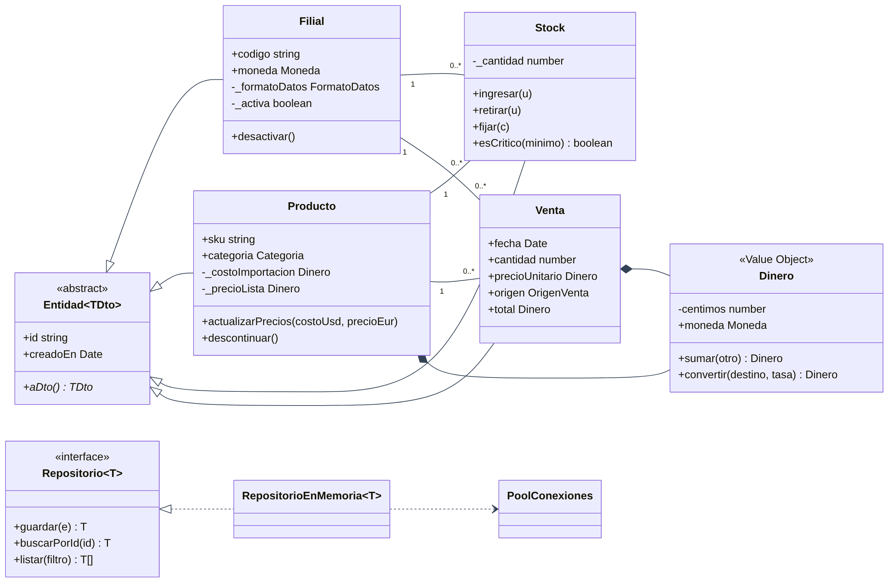
| Elemento | Detalle |
|---|---|
| Lenguaje | TypeScript 5.9 en modo estricto (backend y frontend) |
| Backend | NestJS 11 · class-validator · Jest + Supertest · ESLint + Prettier |
| Frontend | Angular 21 (componentes standalone, signals, carga diferida) · Bootstrap 5 · Vitest |
| Requisitos | Node.js 20.19 o superior y npm 10 o superior. No requiere base de datos. |
| Control de versiones | Git + GitHub, con un historial de commits por etapas y GitHub Actions (lint, pruebas y compilación en cada push) |
git clone https://github.com/andersonugazpor-crypto/serf-reportes-financieros.git
cd serf-reportes-financieros
npm install # instala backend y frontend
npm start # API en :3000 y web en http://localhost:4200
npm test # pruebas de backend y frontendCuentas de demostración: gerente / Gerente2026!, analista / Analista2026!, operador.pe / Peru2026!.
backend/src/ configuracion (Singleton) · infraestructura/persistencia (Singleton, Repositorio)
filiales/adaptadores (Adapter) · reportes/{composite, prototype, builder,
decorator, exportacion, consolidacion, fachada}
backend/test/ unit/ (pruebas por patrón) · e2e/ (API completa)
frontend/src/ core · layout · shared · pages
docs/ definición, diseño, usabilidad, patrones, UML, wireframes, prototipo, capturas| Suite | Pruebas | Verifica | Resultado |
|---|---|---|---|
| singleton.spec.ts | 11 | Instancia única, constructor privado, validación, pool | 11/11 ✓ |
| composite-prototype.spec.ts | 12 | Árbol ilimitado, ciclos, clonación profunda, variantes por país | 12/12 ✓ |
| builder-decorator.spec.ts | 15 | API fluida, pasos obligatorios, Director, capas, firma, exportadores | 15/15 ✓ |
| adapter-dominio.spec.ts | 16 | 5 adaptadores, formatos locales, encapsulamiento de entidades | 16/16 ✓ |
| api.e2e.spec.ts | 17 | Roles, alcance por filial, stock, importación, fachada, verificación, Singleton | 17/17 ✓ |
| frontend app.spec.ts | 6 | Formato de cifras, gráfico, árbol recursivo, sesión | 6/6 ✓ |
| Total | 77 | Cobertura de líneas del backend: 92 % | 77/77 ✓ |
Se definieron tres perfiles (gerente en escritorio, operadora de la filial de Perú y usuario en celular) y se ejecutaron 9 tareas sobre la aplicación funcionando, registrando el resultado, el tiempo y el mensaje mostrado.
| Tarea | Resultado inicial |
|---|---|
| Vender más unidades de las disponibles | Se rechazaba, pero el stock no se veía antes. |
| Integrar un archivo con formato equivocado | Mensaje técnico que desaparecía. |
| Editar el archivo después de previsualizar | Error: permitía importar con la vista previa anterior. |
| Generar un reporte de otra filial (operadora) | Correcto: solo ve su filial. |
| Periodo invertido en el asistente | Correcto: se avisa y no avanza. |
| Reporte del mes con un clic | Correcto: 3,5 s, firmado y confidencial. |
| Panel a inicio de mes | El mes en curso parecía una caída de ventas. |
| # | Problema detectado | Solución aplicada |
|---|---|---|
| 1 | La vista previa quedaba obsoleta al editar el archivo de la filial. | La vista previa se invalida al cambiar el contenido y el botón Importar se deshabilita. |
| 2 | Mensaje de formato técnico y efímero. | El backend indica el formato esperado y la pantalla muestra el error fijo junto al archivo, con la sugerencia de usar el ejemplo. |
| 3 | El operador no veía el stock al vender. | Se muestra "Disponible: N u."; si se excede, el campo se marca y el botón se bloquea. |
| 4 | El reporte rápido salía vacío a inicio de mes. | El reporte rápido usa el último mes completo (cierre mensual). |
| 5 | El mes en curso parecía una caída en el gráfico. | El punto se etiqueta "(en curso)". |
| 6 | En el celular, los nombres de filial se partían en dos líneas. | Celdas sin salto de línea y tabla desplazable. |
| 7 | La barra lateral se cortaba en páginas largas. | El fondo se extiende a todo el alto de la página. |
La segunda ronda de pruebas confirmó las mejoras (figuras 8 y 9). Los cambios están en el commit fix(ux): mejoras tras las pruebas de usabilidad.
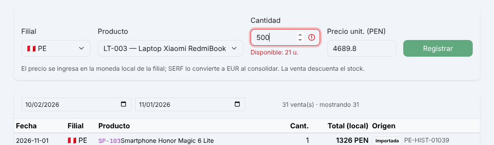
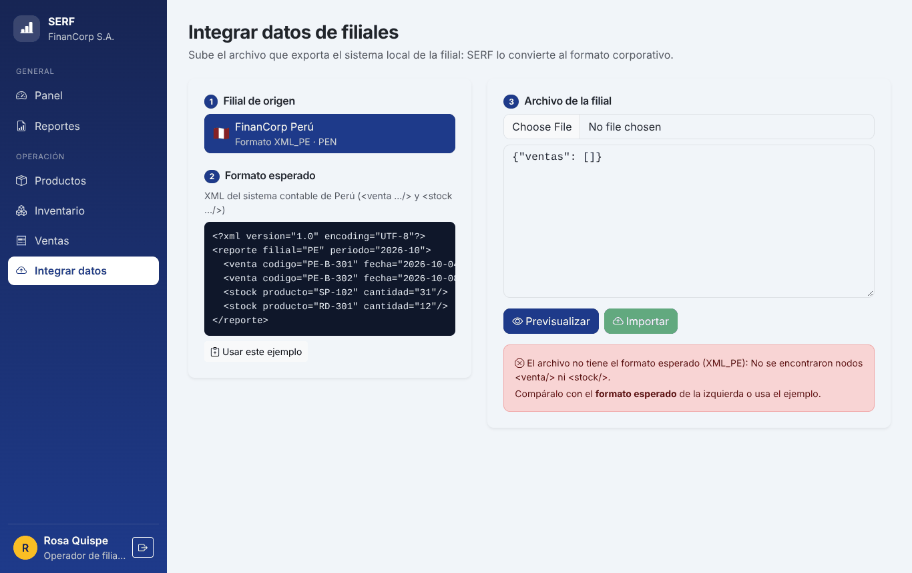
| Problema | Solución |
|---|---|
| La firma debía cubrir todas las capas, incluida la lista de capas aplicadas. | La firma se calcula sobre un JSON canónico (claves ordenadas) que ya incluye su propia capa; el decorador de firma siempre se aplica al final. |
| Errores de redondeo al sumar montos en distintas monedas. | Objeto de valor Dinero en céntimos enteros y conversión explícita con las tasas del Singleton. |
| Las plantillas clonadas compartían el árbol de secciones (clonación superficial). | clonar() recursivo en cada componente Composite; pruebas que verifican la independencia del clon. |